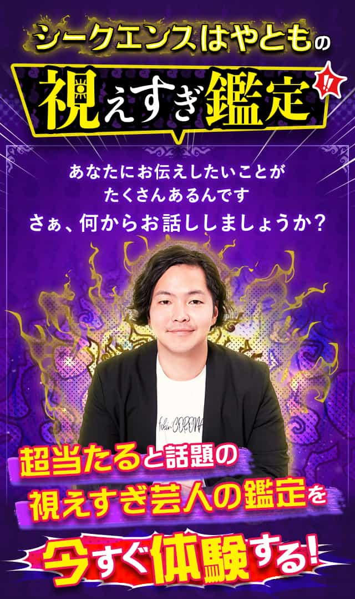
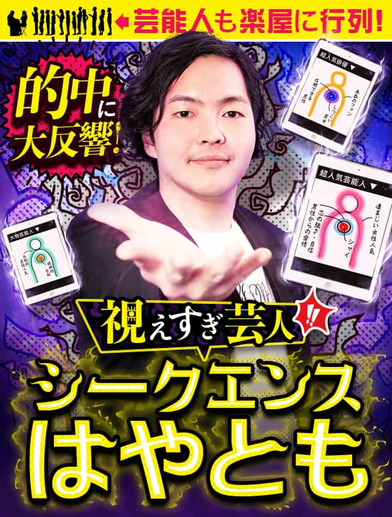

CSSを体験しよう！


善戦か否か。他の競技のコンセプトに基づけば善戦かもしれないが、サッカー的にはひと言では語れない複雑な問題だ。同じメンバーで次戦を戦えば０－２、０－３になるのは固い。差は詰まるどころか、逆に開くと筆者は推測する。ただしこの際、惜敗かどうかを考察することより重要なのは、出場した日本代表選手の顔ぶれになる。森保一監督がこのブラジル戦に、自らが思い描くベストメンバーを並べたことは明白だった。
先発と交代は以下の通り。
GK権田修一、DF長友佑都、吉田麻也、板倉滉、中山雄太、MF遠藤航、原口元気、田中碧、FW伊東純也、古橋亨梧、南野拓実
原口→鎌田大地（後半開始）、古橋→前田大然（後半22分）、伊東→堂安律、南野→三笘薫（後半27分）、長友→山根視来、田中→柴崎岳（後半36分）
ケガや合流が遅れた４選手（守田英正、冨安健洋、浅野拓磨、菅原由勢）とGKを除けば、谷口彰悟、伊藤洋輝、上田綺世、久保建英の４人がベンチを温め続けたことになる。このうち、途中交代しづらいディフェンダーで、４日前のパラグアイ戦にもフル出場している谷口と伊藤を除くならば、優先順位の低い選手として上田と久保の２人の名前が、浮かび上がる。
会員登録1111
次のページ
初心者のためのCSS
#
>あいうえお
CSSでは、タグ・プロパティ・値を記述します。
大事な見出し
会員登録
次のページ